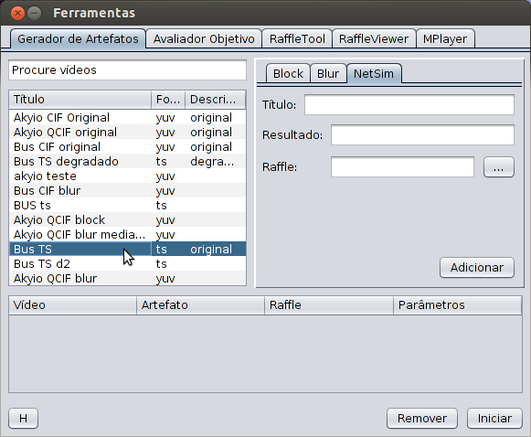
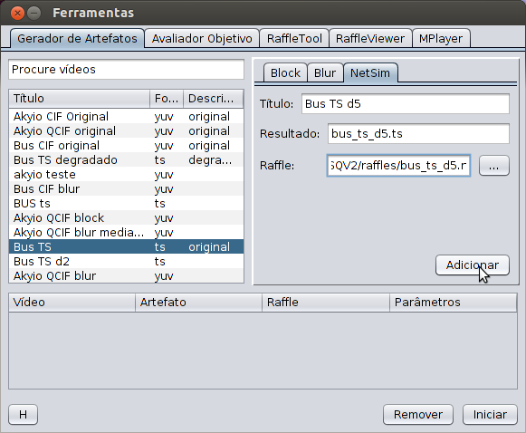
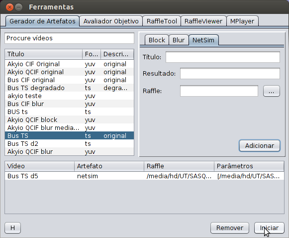

Para simular perdas de pacotes utilizando o simulador NetSim, siga os passos a seguir.
Selecione o vídeo .ts desejado na tabela de vídeos.
Complete os campos indicados na aba NetSim:
- Título: título do novo vídeo;
- Resultado: nome do novo arquivo, deve conter a extesão .ts;
- Raffle: arquivo de degradação (ver RaffleTool);
Clique em 'Adicionar' para acumular a tarefa na fila de tarefas.
Quando terminar de criar tarefas, clique em 'Iniciar' para executar todas as tarefas da fila.
Ao fim do processamento, o novo vídeo deve aparecer na tabela de vídeos.

Para visualizar o novo vídeo, vá até a aba MPlayer e inicie o vídeo.